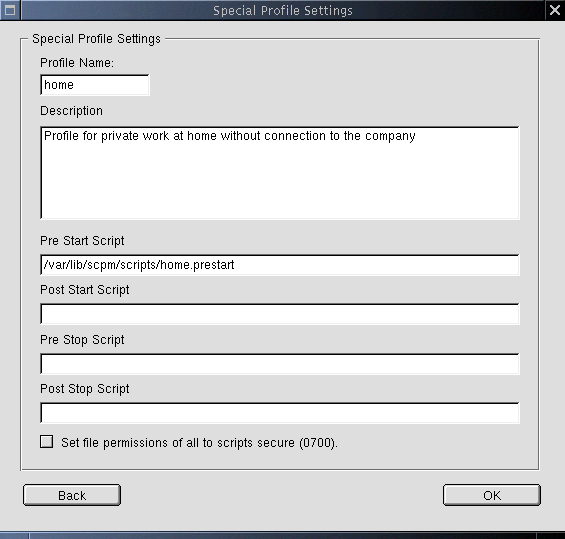

This dialog is entered from the main dialog by clicking the Edit or Add button.
approved helptextYou may change the Profile Name at any time. Names may contain letters, digits, underscore, dash, and dot. The first character must be a letter or digit. The Description is optional. Additionally, you may set dedicated scripts to execute at a given time during
profile switching. First, the switch process collects data. It compares
resources and determines what to change. This data is listed for confirmation in
the Confirm Switch pop-up. Then the switch will be executed: Security Warning: |
 |
SCPM::Get comand. SCPM::Rename to rename the profile
accordingly. If we came here via Add then use SCPM::Add resp. SCPM::Copy with the information
collected in Add new Profile. When the
suboption Make the added profile... was checked the use
the optional auto_switch parameter of SCPM:Add
to make the new profile also the active one.SCPM::Set
command.